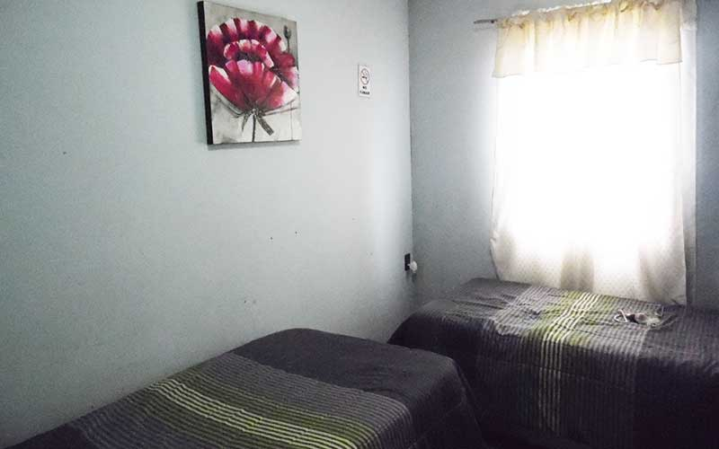

Hostal familiar · Puerto Aysén
Frente al río Aysén, a dos cuadras de la plaza.
Habitaciones con baño privado, desayuno incluido y recepción las 24 horas. Teniente Merino 1080, Puerto Aysén.
- Baño privado
- Desayuno incluido
- Wi-Fi gratis
- Estacionamiento
- Recepción 24 h
- Limpieza diaria
Habitaciones
Todas con baño privado y desayuno servido en el comedor de madera.

¿Viajas en familia?
Cuéntanos cuántas personas son y tus fechas. Te enviamos fotos de la pieza disponible antes de reservar.
Consultar opcionesEl salón y el desayuno
Estufa a combustión lenta para los días de lluvia, comedor de madera y cocina equipada para los huéspedes.


- Estufa a combustión lenta Para las tardes de lluvia, con sillones alrededor.
- Comedor de madera Ahí se sirve el desayuno cada mañana.
- Cocina equipada Disponible para huéspedes que quieran cocinar.
Seis reseñas en Google, todas de cinco estrellas.
Huéspedes reales“Anfitriones muy preocupados. Piezas hermosas y limpias. Desayuno muy rico.”
“Las piezas impecables y equipadas con calefacción. Los desayunos exquisitos y contundentes.”
“Muy bien servicio, cómodo, hermosa vista al río y buena ubicación.”
A dos cuadras de la plaza
Frente al puente Presidente Ibáñez y a pasos de la costanera. Llegas caminando al centro de Puerto Aysén.
Hostal Hudson Teniente Merino 1080, Puerto AysénRegión de Aysén, Chile
WhatsApp +56 9 9439 1571

¿Consultamos tus fechas?
Respondemos por WhatsApp todos los días. Te confirmamos disponibilidad y tarifa vigente.